HALCYGARD
iPhone・iPad・Android／日本語・英語 ｜ App Store・Google Play で配信予定
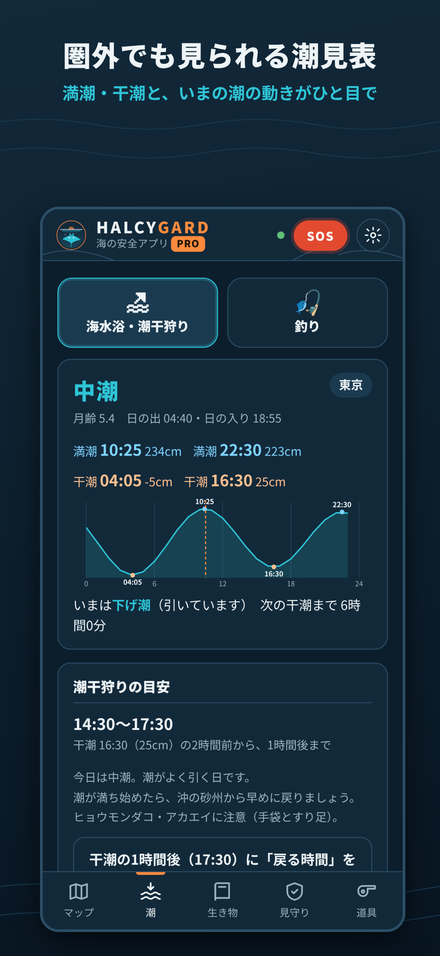
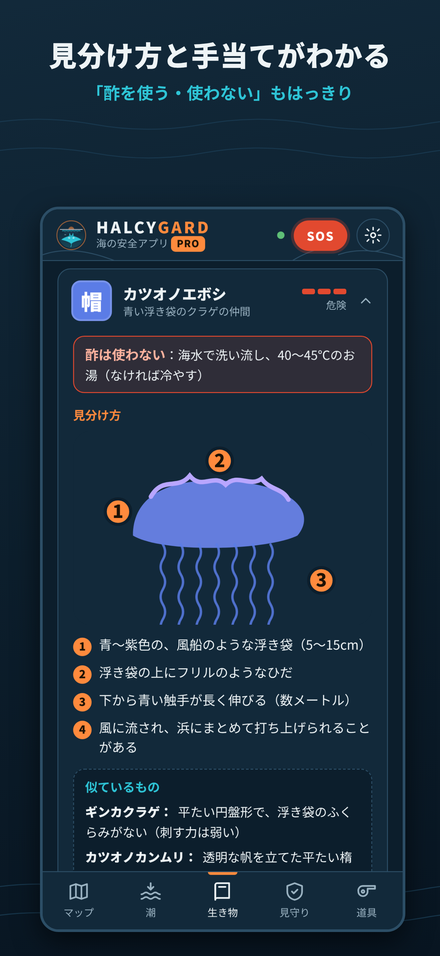
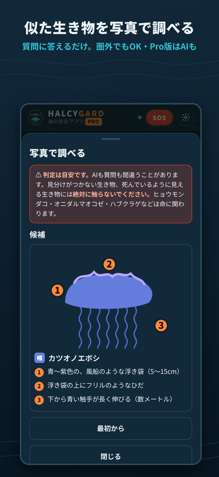
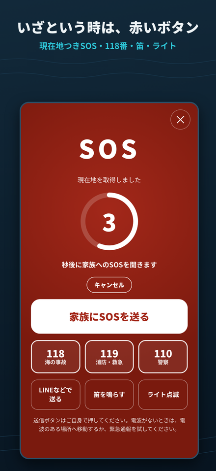
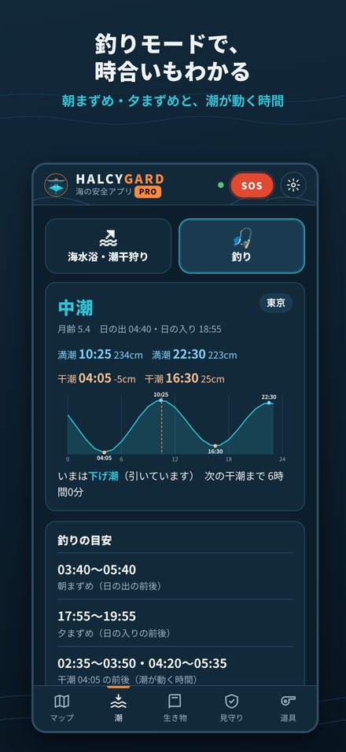
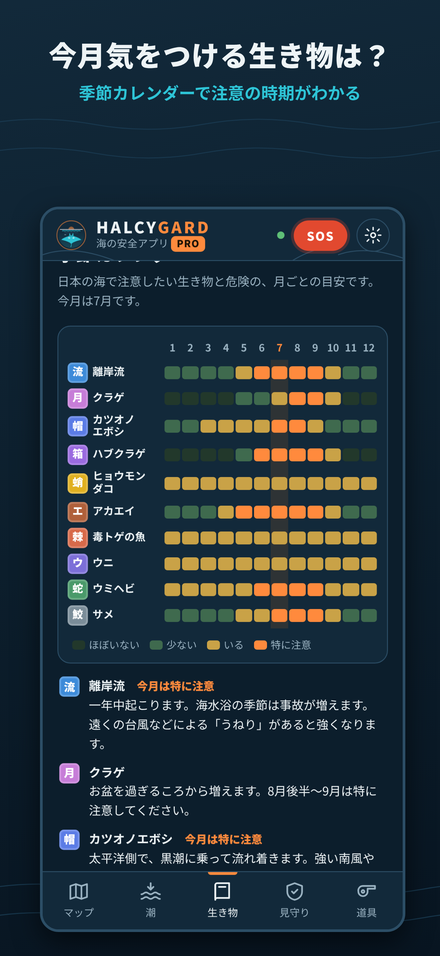
できること
🌊 潮見表（圏外でもOK）
全国239か所の満潮・干潮を、気象庁の潮位表をもとにグラフで。1年分を端末に保存します。
危険な生き物と応急処置
クラゲ・カツオノエボシ・ヒョウモンダコ・アカエイ・離岸流など。見分け方のイラストと「酢を使う／使わない」をはっきり。
📷 写真で調べる
写真と質問で、似た生き物を見分けます（圏外OK）。Pro版はAIでも調べられます。
🆘 SOS
現在地つきのSOSを家族へ。118（海の事故）・119・110への発信、笛、ライトのSOS点滅。
🏖 / 🎣 2つのモード
潮干狩りの時間の目安と「戻る時間」のお知らせ、釣りの朝まずめ・夕まずめと潮が動く時間。
🗺 危険マップ・見守り
離岸流やクラゲを記録して共有。出かける予定と「戻った」を家族に知らせます。
Free版とPro版
| Free | Pro（買い切り） | |
|---|---|---|
| 危険な生き物の辞書・応急処置・写真で調べる（質問）・今日と明日の潮見表・道具・SOS | ○ | ○ |
| オフライン地図・オフラインレーダー | ○ | |
| 30日の潮見表 | ○ | |
| AIで調べる（1日5回まで・欧州では利用できません） | ○ | |
| 見守り（出発・帰宅の連絡、位置共有、安全確認）・移動の記録 | ○ |
Alcyline の安全アプリ
TAYGARD（山の安全）・MEROPE（家族の防災）・HALCYGARD（海の安全）
応急処置の説明は一般的な目安で、医療の代わりにはなりません。命に関わるときは緊急通報を優先してください。
HALCYGARD
iPhone, iPad & Android · English & Japanese · Coming to the App Store and Google Play
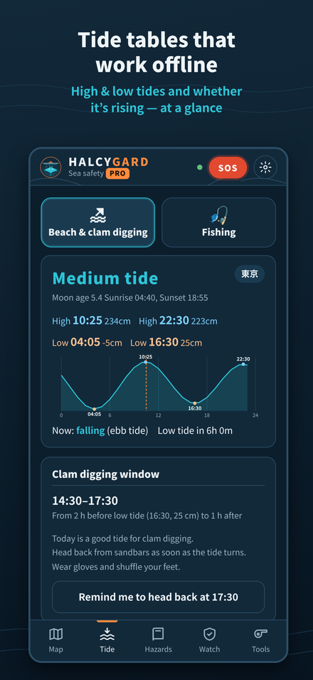
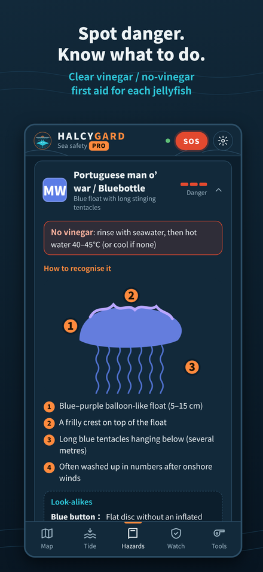
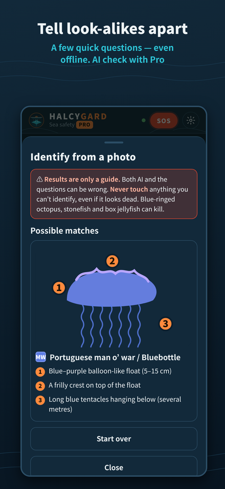
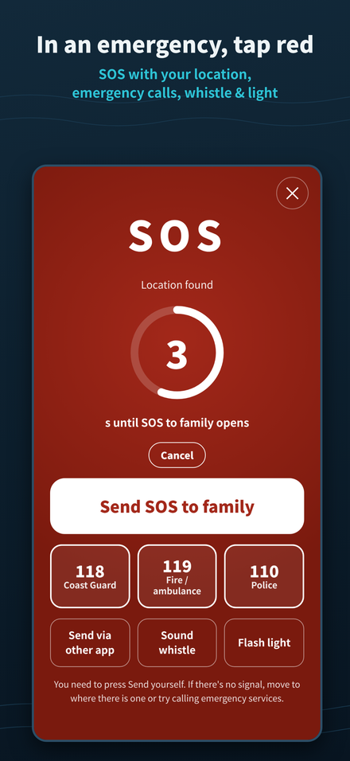
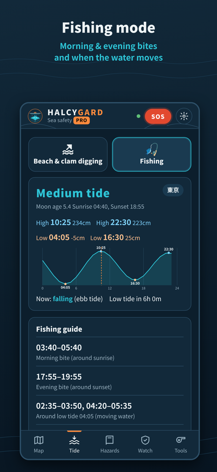
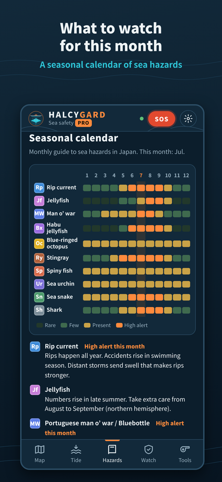
Features
🌊 Offline tide tables
High and low tides for 239 stations across Japan, based on Japan Meteorological Agency tables. A full year is saved on your device.
Sea hazards & first aid
Jellyfish, man o' war, box jellyfish, blue-ringed octopus, stingrays, rip currents and more, with illustrated ID and clear vinegar / no-vinegar labels.
📷 Identify from a photo
Tell look-alikes apart with a photo and a few questions — even offline. AI check with Pro.
🆘 SOS
SOS with your location to your family, emergency call buttons, a whistle and an SOS light.
🏖 / 🎣 Two modes
Clam-digging windows and a head-back reminder; morning and evening bites and moving-water times for fishing.
🗺 Hazard map & watch
Report rip currents and jellyfish, and let your family know your plans and when you're back.
Free and Pro
| Free | Pro (one-time) | |
|---|---|---|
| Hazard guide, first aid, photo ID by questions, today's & tomorrow's tides, tools, SOS | ✓ | ✓ |
| Offline maps and radar | ✓ | |
| 30-day tide tables | ✓ | |
| AI photo check (5 per day; not available in Europe) | ✓ | |
| Watch features and track recording | ✓ |
Safety apps by Alcyline
TAYGARD (mountains) · MEROPE (family preparedness) · HALCYGARD (the sea)
First aid information is general guidance and not a substitute for medical care. In an emergency, call your emergency number first.